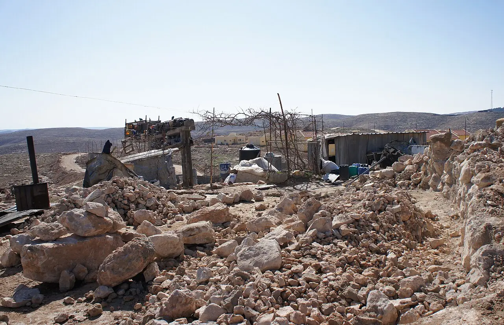

Umm al-Kheir, South Hebron Hills, occupied West Bank · Press freedom · Life & safety
Two activist-journalists attacked by settlers near Umm al-Kheir are arrested, then banned from the West Bank.

File photo · 2012Umm al-Kheir in the South Hebron Hills in 2012: the rubble of a demolished home, with the Karmel settlement behind. Photo: Friends123 / Wikimedia Commons, CC0 (cropped)Times of Israel
Know your rightsIf detained: ask why, tell family, get a lawyer · NALSA 15100
Need to talk?Tele-MANAS 14416 · free, 24×7
Verify, then shareCheck the date and the source first
Support aidMSF · ICRC · UNICEF
Copy for WhatsApp
Resistance Daily, Fri 30 Oct
• Sudan: UNICEF: five children killed in Nyala strike
• Gaza: Gaza: six killed, including ministry staff
• Dnipro: Drone strike on Dnipro rail station kills 13
• Siang: Siang dam opponents march; 200+ get notices
Sources for every fact, in the full edition: https://resistancedaily.github.io/archive/2026-10-30.html
How we report
We cover rights, not parties: life, assembly, expression, press, due process, land.
Every number links to its source, with ground reporting first.
Official positions appear next to allegations; claims are labelled as claims.
When sources disagree, we show the range. Maps show land only, with no political borders.
Photos are freely licensed and credited. "File photo" marks an older picture of the place, not of the event. We blur protesters' and children's faces.